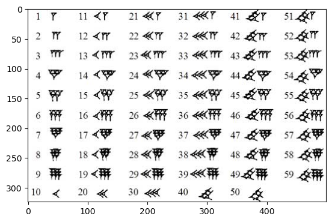
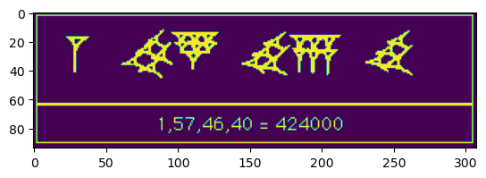

2. Imagine about nothing (PY version)#
Leopold Kronecker, who once wrote that
--> "God made the integers; all else is the work of man."
- a key and very dominant mathematicans who object irrational number, pi, set theory, ... etc.
- It was finally proved that pi is transcendetal number ...
- but as he said what is the point, they do not "exist" ! Illusion!!!
- (In a way he is not alone,
a lot of mathmaticians are also not very uncomforable with negative number ...)
--> Let us do zero first and then imaginery number
import os
print(os.getcwd())
/Users/ngcchk/Documents/Github/gpd2-win-unity1/ipadred-rain/imgno_book1/imgnobk1
# why original like this !!!
#import lib.main.a0_babylon_pos_0
#from lib.main import a0_babylon_pos_0
import numpy as np
import matplotlib.pyplot as plt
from PIL import Image
'''
# https://www.programiz.com/python-programming/directory
import os
from pathlib import Path
print(Path.home())
print(os.getcwd()) # /Users/ngcchk/Documents/Github/gpd2-win-unity1
print(os.listdir())
print(os.listdir('.'))
print(os.listdir('ipadred-rain'))
print(os.listdir('./ipadred-rain'))
print(os.listdir(os.path.expanduser('~')))
'''
# see https://matplotlib.org/stable/tutorials/introductory/images.html
# see https://stackoverflow.com/questions/71650269/how-to-display-multiple-images-at-once-with-matplotlib-in-one-figure
#img = np.asarray(Image.open('./ipadred-rain/lib/main/img/Babylonian_numerals.jpg'))
def display_img(num = 0):
if num == 1:
img = np.asarray(Image.open('./lib/main/img/Babylonian_numerals.jpg'))
imgplot = plt.imshow(img)
plt.show()
elif num == 2:
img = np.asarray(Image.open('./lib/main/img/Babylonian_424000.gif'))
imgplot = plt.imshow(img)
plt.show()
elif num == 3:
img = np.asarray(Image.open('./lib/main/img/Babylonian_square.png'))
imgplot = plt.imshow(img)
plt.show()
else:
print(
'''
# note
# a) there are only 2 symbols 1 and 10
# b) every number is actually by putting number of 1 and number of 10
# c) reaching 59 then what ..
# d) It most to a positional way of representation
# e) 61 is 1 1 with the first 1 represent 60
# f) lots of issue of 60, 600, ... but eve for 601 what to do
# g) there is no 0 ... 0 DOES NOT EXIST and you can say something does not exist
# h) hence you have 1 1 as 601 a gap, a position of nothing
# i) or 6001 ...
'''
)
return
#if num != 0:
#ax.imshow(image)
#plt.show()
if __name__ == "__main__":
print("in main of a0")
#display_img(1)
else: # under jupyter
print("not in main of a0")
#display_img(0)
display_img(0)
in main of a0
# note
# a) there are only 2 symbols 1 and 10
# b) every number is actually by putting number of 1 and number of 10
# c) reaching 59 then what ..
# d) It most to a positional way of representation
# e) 61 is 1 1 with the first 1 represent 60
# f) lots of issue of 60, 600, ... but eve for 601 what to do
# g) there is no 0 ... 0 DOES NOT EXIST and you can say something does not exist
# h) hence you have 1 1 as 601 a gap, a position of nothing
# i) or 6001 ...
# why original like this !!!
# lib.main.a0_babylon_pos_0.display_img(1)
#from lib.main import a0_babylon_pos_0
#a0_babylon_pos_0.display_img(1)
display_img(1)

note
a) there are only 2 symbols 1 and 10
b) every number is actually by placing and counting number 1 and number 10 out; FULLY
c) reaching 59 then what ... 60 is a problem let us skip it first ;-P
# why original like this !!!
# lib.main.a0_babylon_pos_0.display_img(2)
#from lib.main import a0_babylon_pos_0
#a0_babylon_pos_0.display_img(2)
display_img(2)

d) Babylon use 60 as based and hence 1 is 60 * 60 *...
e.g. 1 here is 60^3 ...
e) A number's value is based on its position
The 1 above is 1 * 60 * 60 * 60 because its postion after you read in the hole number
In fact even worst you cannot tell what 1 meant until you have the whole number
as it uses the Big Endian convention
i.e. until you reach the end of a number you do not know what is 1
It can be 1, 60, 60*60, 60*60*... you do not know
(Cf the little endian for this number 40, 46, 57, 1
and after reading 40 you know it is just 40,
and after reading 46 as "nd number you know it is 46 * 60 ...
you do not need to wait for the whole number
or fight the egg head war of big ednian vs little endian )
The Roman does not use postional system and hence has no such issue
The only trick to remember if you see a small number earlier than a larger number deduct it
XL and LX where X is 10 and L is 50, what are the numbers ?
You do not need to know the position of X or L is you know it is always 10 and 50
In fact, there is no need of zero (except zero itself called nulla)
Actually Hans's does not really use a positional system
as 2,0001 is really 2 thousands and one not 2001
still have zero to sound better
f) For the issue 1574640 is 15,7 or 1,57 ... Babylon use gap
i.e. 1 gap 57 gap 46 gap 40
g) How about 60, 600, ...
seems to rely upon common sense?
h) But what about 601 6001 ... Big problem
The problem is that there is no zero and they use a positional system!!!
# why original like this !!!
# lib.main.a0_babylon_pos_0.display_img(2)
#from lib.main import a0_babylon_pos_0
#a0_babylon_pos_0.display_img(2)
display_img(2)
"a cuneiform tablet (actually AO 17264 in the Louvre collection in Paris)"
we have
2 ? 27 ?? 6 ? 9
gap, large gap, medium size gap
What is it?
2,27 square is 6 <0> 9 ...
2<gap>27 <very big gap> 6<larger gap>9
This is intrepreted as
2*60+27 = 147 * 147 = 21,609 or 6*60*60+9
Thanks you very much for the attention!!!!!
Babylon consider zero as nothingness, and does not exist
But they need at least in their positional based number system
Even if zero does not exist
but one may have to accept its usefulness
and use it ... at least that is what the Babylonian did
You may think it does not exist, but your system really need it wow!!!!
IT DOES NOT EXIST
IT IS NOT REAL
THERE IS NOTHING THERE!!!!
Still...
Many maths and possibly many religion and philosophy are like that!!!
As said only integer really exist, all are ... (the guy is mad mathematicans btw)!